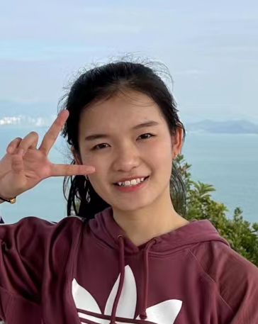

|  | Siting Liu, Ph.D. Candidate |
I am currently a Ph.D. candidate at the Department of Computer Science and Engineering, The Chinese University of Hong Kong (CUHK), under the supervision of Prof. Bei Yu since Fall 2020. Previously, I received my B.S. in the Department of Computer Science and Technology from Huazhong University of Science and Technology (HUST) in 2020. My Chinese name is 刘思婷.
Email: lusicaliu@outlook.com
Github
LinkedIn
Google Scholar
Resume
Placement and Routing Optimization
Machine Learning in EDA
GPU Acceleration
[C12] Siting Liu, Jiaxi Jiang, Zhuolun He, Ziyi Wang, Yibo Lin, Bei Yu, Martin Wong, “Routing-aware Legal Hybrid Bonding Terminal Assignment for 3D Face-to-Face Stacked ICs”, ACM International Symposium on Physical Design (ISPD), Taipei, Mar. 12–15, 2024.
[C11] Su Zheng*, Lancheng Zou*, Peng XU, Siting Liu, Bei Yu, Martin Wong, “Lay-Net: Grafting Netlist Knowledge on Layout-Based Congestion Prediction”, IEEE/ACM International Conference on Computer-Aided Design (ICCAD), San Francisco, Oct. 29–Nov. 02, 2023.
[C10] Siting Liu, Yuan Pu, Peiyu Liao, Hongzhong Wu, Rui Zhang, Zhitang Chen, Wenlong Lv, Yibo Lin, Bei Yu, “FastGR: Global Routing on CPU-GPU with Heterogeneous Task Graph Scheduler (Extended Abstract)”, International Joint Conference on Artificial Intelligence (IJCAI), Macau, Aug. 19–25, 2023.
[C9] Siting Liu*, Ziyi Wang*, Fangzhou Liu, Yibo Lin, Bei Yu, Martin Wong, “Concurrent Sign-off Timing Optimization via Deep Steiner Points Refinement”, ACM/IEEE Design Automation Conference (DAC), San Francisco, Jul. 09–13, 2023.
[C8] Ziyi Wang*, Siting Liu*, Yuan Pu, Song Chen, Tsung-Yi Ho, Bei Yu, “Restructure-Tolerant Timing Prediction via Multimodal Fusion”, ACM/IEEE Design Automation Conference (DAC), San Francisco, Jul. 09–13, 2023.
[C7] Su Zheng, Lancheng Zou, Siting Liu, Yibo Lin, Bei Yu, Martin Wong, “Mitigating Distribution Shift for Congestion Optimization in Global Placement”, ACM/IEEE Design Automation Conference (DAC), San Francisco, Jul. 09–13, 2023.
[C6] Siting Liu, Peiyu Liao, Rui Zhang, Zhitang Chen, Wenlong Lv, Yibo Lin, Bei Yu, “FastGR: Global Routing on CPU-GPU with Heterogeneous Task Graph Scheduler”, IEEE/ACM Proceedings Design, Automation and Test in Europe (DATE), Mar. 14–23, 2022. (Best Paper Award)
[C5] Peiyu Liao, Siting Liu, Zhitang Chen, Wenlong Lv, Yibo Lin, Bei Yu, “DREAMPlace 4.0: Timing-driven Global Placement with Momentum-based Net Weighting”, IEEE/ACM Proceedings Design, Automation and Test in Europe (DATE), Mar. 14–23, 2022.
[C4] Qi Sun, Tinghuan Chen, Siting Liu, Jin Miao, Jianli Chen, Hao Yu, Bei Yu, “Correlated Multi-objective Multi-fidelity Optimization for HLS Directives Design”, IEEE/ACM Proceedings Design, Automation and Test in Europe (DATE), Feb. 01–05, 2021. (Best Paper Award Nomination)
[C3] Siting Liu, Qi Sun, Peiyu Liao, Yibo Lin, Bei Yu, “Global Placement with Deep Learning-Enabled Explicit Routability Optimization”, IEEE/ACM Proceedings Design, Automation and Test in Europe (DATE), Feb. 01–05, 2021.
[C2] Zhuolun He, Peiyu Liao, Siting Liu, Yuzhe Ma, Bei Yu, “Physical Synthesis for Advanced Neural Network Processors”, IEEE/ACM Asian and South Pacific Design Automation Conference (ASPDAC), Jan. 18–21, 2021. (Invited Paper)
[C1] Haoyu Yang, Shifan Zhang, Kang Liu, Siting Liu, Benjamin Tan, Ramesh Karri, Siddharth Garg, Bei Yu, Evangeline F.Y. Young, “Attacking a CNN-based Layout Hotspot Detector Using Group Gradient Method”, IEEE/ACM Asian and South Pacific Design Automation Conference (ASPDAC), Jan. 18–21, 2021.
[J3] Peiyu Liao, Dawei Guo, Zizheng Guo, Siting Liu, Zhitang Chen, Wenlong Lv, Yibo Lin, Bei Yu, “DREAMPlace 4.0: Timing-driven Placement with Momentum-based Net Weighting and Lagrangian-based Refinement”, IEEE Transactions on Computer-Aided Design of Integrated Circuits and Systems (TCAD), 2023.
[J2] Siting Liu, Yuan Pu, Peiyu Liao, Hongzhong Wu, Rui Zhang, Zhitang Chen, Wenlong Lv, Yibo Lin, Bei Yu, “FastGR : Global Routing on CPU-GPU with Heterogeneous Task Graph Scheduler”, IEEE Transactions on Computer-Aided Design of Integrated Circuits and Systems (TCAD), 2023.
[J1] Qi Sun, Tinghuan Chen, Siting Liu, Jianli Chen, Hao Yu, Bei Yu, “Correlated Multi-objective Multi-fidelity Optimization for HLS Directives Design”, ACM Transactions on Design Automation of Electronic Systems (TODAES), vol. 27, no. 4, 2022.
Ph.D. Computer Science and Engineering, The Chinese University of Hong Kong, Aug 2020 - present
B.S. (ACM class), Computer Science and Technology, Huazhong University of Science and Technology(HUST), Sept 2016 - June 2020
Software Engineer Intern, Cadence, June 2023 - Aug. 2023
Research Assistant, CUHK, Nov. 2019 - May 2020
CSCI1540, 2020-R1, Introduction to Computing Using C++
CSCI4120, 2020-R2, Principles of Computer Game Software
CSCI1130, 2021-R1, Introduction to Computing Using Java
CSCI1530, 2021-R2, Computer Principles and Java Programming
Best Paper Award, DATE, 2022
Best Paper Award Nomination, DATE, 2021
3rd Place Award, ISPD Contest, 2020
Full Postgraduate Studentship, CUHK, 2020-2024
Outstanding Graduate, HUST, 2020
CCF Elite Collegiate Student Award, CCF, 2019
National Encouragement Scholarship, HUST, 2017 2018 2019
First Prize in Mathematics competition of Chinese College Students, CMS, 2017